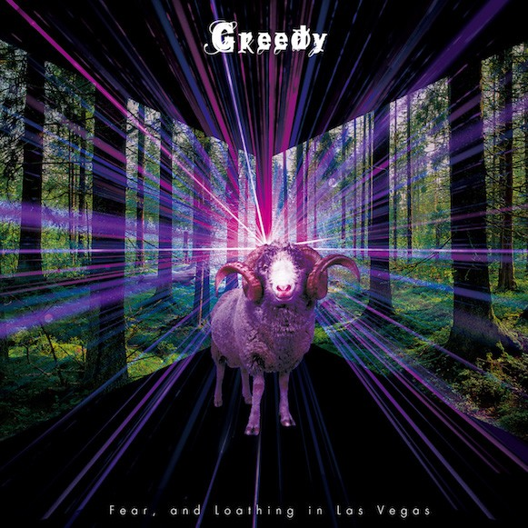
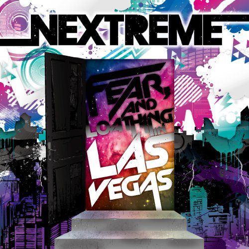

Disco Graohies
IMG
About
 |
Dance & Scream |
|---|---|
| FALILV의 첫 디스코그래피. | |
|  | Greedy |
| 한정 싱글, 2018년 7월 6일 국내 음원 서비스가 가능해졌다. | |
|  | NEXTREME |
| 이 미니 앨범의 이름은 MA$HU가 탈퇴하기 전에 냈던 아이디어로, NEXT와 EXTREME을 합친 말장난이다. | |
 |
Rave-up Tonight |
| 이 앨범을 기점으로 Fear, and Loathing in Las Vegas의 음악 스타일이 크게 바뀌게 된다. |